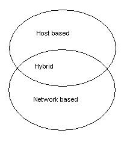

Kurt Seifried, [email protected]
It takes a lot less effort to destroy and break things, than it takes to build and fix them. This is nowhere more evident then computer networks. Corporations, governments, universities and other organizations spend large sums of money on computer network infrastructure, and the cost of keeping them running is not trivial. And this doesn't even take into consideration malicious attacks and security controls which add even more cost to building and maintaining a network of computers. Unfortunately for most of us, the desktop is Microsoft centric, which means most of us can't do a whole lot to it to make it more secure. If you run Windows 95 or 98 you get no file permissions (and hence the computer has absolutely minimal protection from hostile acts), if you run Windows NT 4.0 Server or Workstation the default settings are full control for everyone for all files on the system, and registry keys (fixing this takes a long time, and will break some applications). Let's assume for a minute you have fully locked down the machines, users cannot modify them, they are physically secure, and so on, are you secure? No. New problems for various operating systems are made public all the time, these range from minor security issues to full blown "take control of the machine remotely and do what you want with it". Also, due to the single user oriented nature of Windows there exists a whole class of malicious software called viruses, which typically consist of some code to exploit a program or system bug, a replication mechanism, and possibly some additional software that ranges from annoying to destructive. What are network and systems administrators to do in such an increasingly hostile world?
Entire classes of software with literally hundreds (ok, maybe not hundreds but a lot) of companies producing products have sprung up over the last few years, and is now beginning to consolidate into several large companies providing complete product lines to cover everything you could want, and dozens of medium to small sized companies with sometimes just one main product. Of this the anti-virus software vendors were one of the original groups of vendors to start writing add-on software to enhance the security (which was non-existent on Microsoft platforms at the time) available for ensuring software that you used was not malicious. This has lead to an "arm's race" (apologies for using this but it is a decent analogy) between virus software writers, and anti-virus vendors. Most anti-virus software packages started out as simple programs that checked the files against a known list of "bad" ones (i.e. via checksum and so forth), which lead to polymorphic viruses (that is the software would modify itself a little bit each time, thus defeating this detection technique). The anti-virus vendors then started scanning the actual binary code for the various pieces of code present in viruses, and heuristic packages that supposedly figure out what the software will do, and based on that can block it if it is considered malicious (if this worked properly though we wouldn't be needing anymore virus signature updates now would we?). Additionally things have gotten more complicated, with the integration of anti-virus software with such services as email, www and ftp. A small list of "new" problems with anti-virus software that have come out in the last few months:
That's all I could find from the last month or two of Bugtraq. Obviously the anti-virus vendors have a ways to go before their products can even be called remotely reliable. The last dozen or so viruses that spread via email have all left the anti-virus vendor community flat footed, the Melissa virus (which was relatively harmless) resulted in several large sites (Microsoft, Intel, etc.) shutting down the mail servers (and in some cases it overwhelmed mail servers causing them to be effectively shut down).
It is obvious that anti-virus vendors will always be playing catch-up with the virus writers, which wouldn't be such a problem if anti-virus software updates were released quickly and people installed them. This is however impossible. The life cycle of a virus looks something like:
During steps 2, 3, 4, 5, and up till 6 the virus will spread unchecked. Once an update is created and distributed the virus will only spread to systems without protection (a good sized percentage). The amount of effort it takes to install software on millions of computers is horrendous, even when heavily automated, compared to the amount of effort a virus author spends, the ROI (return on investment) can be significant.
Directly related to anti-virus software is intrusion detection software (sometimes refereed to as IDS or NIDS). I'm going to start with a brief explanation of the various intrusion software technologies and types since they overlap and can be somewhat convoluted. As a rule of thumb the software has to run on a computer system (that's a pretty safe rule for most software packages actually), and this machine can either be dedicated to the task of monitoring the network and other systems, or the software can be an additional component that runs on a production server.
|  |
For example we have NFR (Network Flight Recorder) which is an entirely network based system, you have one or more collection machines (a dedicated box, either an appliance system or something you have built yourself), which analyze data, and can funnel it all to a central collection point (allowing you to more easily detect distributed attacks and see patterns of activity). Then there are a variety of products that are loaded onto client machines and report to a central machine via SNMP (or some other protocol), which analyses the data and looks for attacks and so forth, and in between the two are some hybrid systems. As with anti-virus software vendors a major problem with (N)IDS systems is the time frame between when an attack is discovered, and when the (N)IDS systems are updated to detect and react to it accordingly (the life cycle is pretty much identical to that of a virus's life cycle).
The next major differentiation is how active a role the software will take when it detects an event, for example some systems can be set to lock out a host computer if it appears hostile, whereas some will simply compare files against signatures to see if they have changed or not and generate a report (and the extreme of this would be forsenic software used "after the fact" to try and determine what happened). This leads to one of the fundamental problems of intrusion detection systems. These systems are typically heavily automated, and sometimes make use of neural networks, artificial intelligence and other techniques in an effort to make them more accurate and useful. If you set the detection threshold too low you will detect more events, resulting in a large number of false alarms, and wasted effort. If you set the detection threshold too high you run the risk of missing events that might prove critical to continued operations (a.k.a. a bad person might get in and delete all your archived .... research data). In an effort to get the best of both worlds (low detection threshold, with a minimum of false alarms, and no important events missed) the systems make heavy use of rule sets, content based analysis, and so forth. Unfortunately even the best of these systems are far from perfect. In addition to this you have to act on events, monitoring the network and generating a detailed report of attacks, which is useless if you do not use it constructively. Again we discover a fundamental problem, if you give control up to the computer there is a good chance an attacker will be able to abuse it and possibly circumvent it, whereas if you have a human respond to each event the cost and time involved would be prohibitive.
Striking a balance between a low detection threshold and a high one, in addition to letting either the computer handle it, or a human is a critical process (it is not a single decision, since you should be evaluating results constantly and fine tuning it). The same applies to anti-virus software, you want to get the updates to the machines as fast as possible, which means automation where possible, however there are some basic issues that can severely delay the time between a virus rampaging around networks, and a successful counter to it. Even if you have instantaneous updates of your anti-virus software and intrusion detection systems, there is still a timeframe in which you can be successfully attacked. But this doesn't make anti-virus software and intrusion detection systems worthless, far from it. Security is about risk management and risk minimization, often within a budget and time constraints (few organizations can write a blank check as far as computer security is concerned). The real question is will the ROI (return on investment) be worthwhile, e.g. armed security guards at every workstation to make sure no-one tampers with them would be nice, but not terribly cost effective.
In addition to this there are intrusion detection software packages that only detect an attack after the fact, such as tripwire. This is however not as useless as it would seem at first blush (someone stole all the silverware, guess we should buy a new set). A part of all security incidents is discovering the scope of the problem (did they only get into one machine, or did they get into a few hundred?), and tools like tripwire can make this task much more easy (in fact some vendors are now shipping integrity checking software that can be loaded onto a bootable floppy so you can get a very secure snapshot of the system that you can compare securely, of course it requires a server reboot).
Computer security doesn't come in nice shrink wrapped box for $99.95 (after a $50 rebate). Computer security is an ongoing process, with constant re-evaluation and changes, as new threats and solutions are released, you need to be able to react to them effectively. Ideally vendors would ship software that was not susceptible to viruses (this is possible), nor susceptible to user/network/random events resulting in improper operation (like giving someone a root shell remotely). This isn't going to happen for along time however (although there is a variety of hardening software becoming available).
Anti-virus software and intrusion detection systems (passive and active) are all part of a healthy security policy implementation. Any security plan implementation, when properly done will require some degree of human intervention. If possible you should dedicate people to the task, and possibly have them fulfill other optional duties (like evaluating new software for possible future use). If the people you have tasked are responsible for support, chances are they will spend the majority of their time running around and putting out fires instead of preventing a massive firestorm.
Kurt Seifried ([email protected]) is a security analyst and the author of the "Linux Administrators Security Guide", a source of natural fiber and Linux security, part of a complete breakfast.
Reference links:
Virus paper:
http://www.sophos.com/virusinfo/whitepapers/futurevi.html
IBM article / interview on new virus detection / eradication technology
http://www.ibm.com/stretch/mindshare/white.phtml
Network intrusion activity:
5 (N)IDS vendors respond to questions:
Lessons Learned in the Implementation of a Multi-Location Network Based Real Time Intrusion Detection System:
http://www.zurich.ibm.com/pub/Other/RAID/Prog_RAID98/Full_Papers/Puldy_slides.html/index.htm
Design of an NIDS system:
http://www.cs.ucsb.edu/~kemm/netstat.html/projects.html
File integrity checking software:
http://www.tripwiresecurity.com
Last updated 3/24/2002
Copyright Kurt Seifried 2002